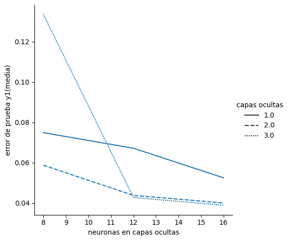
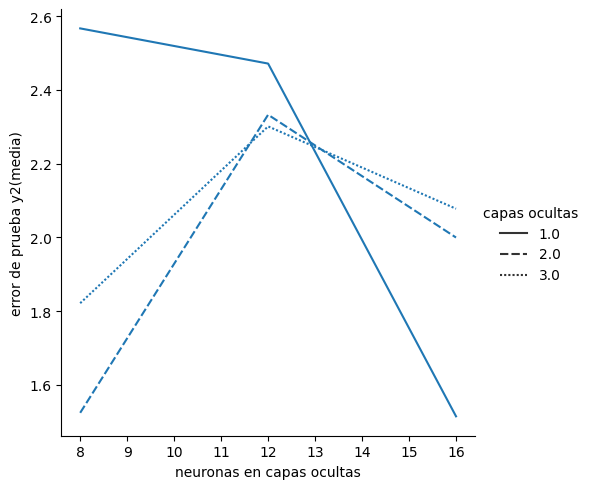
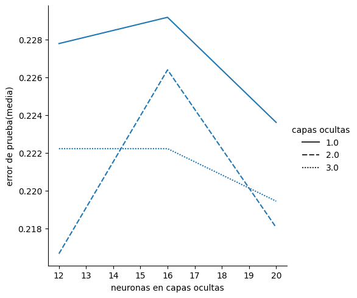

Laboratorio 4 - Parte 1. Redes neuronales artificiales - perceptrón multicapa#
#!wget -nc --no-cache -O init.py -q https://raw.githubusercontent.com/jdariasl/Intro_ML_2025/master/init.py
import init; init.init(force_download=False); init.get_weblink()
from local.lib.rlxmoocapi import submit, session
import inspect
session.LoginSequence(endpoint=init.endpoint, course_id=init.course_id, lab_id="L04.01", varname="student");
#configuración del laboratorio
# Ejecuta esta celda!
from Labs.commons.utils.lab4 import *
_ = part_1()
Este ejercicio tiene como objetivo implementar una red neuronal artificial de tipo perceptrón multicapa (MLP) para resolver un problema de regresión. Usaremos la librería sklearn. Consulte todo lo relacionado con la definición de hiperparámetros, los métodos para el entrenamiento y la predicción de nuevas muestras en el siguiente enlace: http://scikit-learn.org/stable/modules/generated/sklearn.neural_network.MLPRegressor.html#sklearn.neural_network.MLPRegressor
Para este ejercicio usaremos la base de datos sobre calidad del aire, que ha sido usada en laboratorios previos, pero en este caso trataremos de predecir dos variables en lugar de una, es decir, abordaremos un problema de múltiples salidas.
#cargamos la bd que está en un archivo .data y ahora la podemos manejar de forma matricial
db = np.loadtxt('Labs/commons/utils/data/AirQuality.data',delimiter='\t') # Assuming tab-delimiter
#Esta es la base de datos AirQuality del UCI Machine Learning Repository. En el siguiente URL se encuentra toda
#la descripción de la base de datos y la contextualización del problema.
#https://archive.ics.uci.edu/ml/datasets/Air+Quality#
x = db[:,0:11]
y = db[:,11:13]
Para calcular los errores, vamos a explorar y usar el modulo de metricas de sklearn.
Podemos observar que el modulo tiene metricas para regresión y clasificación.
Ejercicio 1 - Experimentar con MLP para regresión#
Para porder implementar nuestra función, lo primero que debemos entender es la estructura de la red.
Como mencionamos, vamos a solucionar un problema de multiples salidas. Estas salidas contienen valores continuos. Por lo tanto debemos garantizar que la capa de salida de nuestra red tenga la capacidad de modelar este tipo de datos.
#@title Pregunta Abierta
#@markdown ¿De acuerdo al problema planteado, que función de activación debe usar el MLP para un problema de regresión?
respuesta = "" #@param {type:"string"}
Una característica de los modelos de sklearn, es que ciertos tipos de atributos solo pueden ser accedidos cuando se entrena el modelo. Vamos a desarrollar una pequeña función para comprobar cuál es la función de activación de los modelos MLP para regresión de sklearn.
# ejercicio de código
def output_activation():
"""funcion que entrena un modelo
con datos aleatorios para confirmar la función
de activación de la ultima capa
"""
mlp = MLPRegressor()
# fit with some random data
xrandom = np.random.rand(10,2)
yrandom = np.zeros(10)
# llamar el metodo adecuado para entrenar
# el mlp con los x y 'y' random
mlp.fit(, )
# retornar el atributo de mlp adecuado
return (mlp.)
File "<ipython-input-6-4b7898cb5cdf>", line 13
mlp.fit(, )
^
SyntaxError: invalid syntax
## TEACHER
from local.lib.rlxmoocapi import submit, session
session.LoginSequence(endpoint=init.endpoint, course_id=init.course_id, lab_id="L04.01", varname="teacher");
logging in as julian.ariasl@udea.edu.co... please wait
-------------
using course session introml::udea.pre.20251
success!! you are logged in
-------------
teacher = session.Session(init.endpoint).login(course_id=init.course_id, lab_id='L04.01', google_token=google_token)
## TEACHER DEFINEGRADER
def grader_01(functions, variables, caller_userid):
import numpy as np
from sklearn.neural_network import MLPRegressor
def t_output_activation():
"""funcion que entrena un modelo
con datos aleatorios para confirmar la función
de activación de la ultima capa
"""
mlp = MLPRegressor()
# fit with some random data
xrandom = np.random.rand(10,2)
yrandom = np.zeros(10)
# llamar el metodo adecuado para entrenar
# el mlp con los x y 'y' random
mlp.fit(xrandom, yrandom)
# retornar el atributo de mlp adecuado
return (mlp.out_activation_)
# retrieve definitions
namespace = locals()
for f in functions.values():
exec(f, namespace)
s_output_activation = namespace['output_activation']
msg = "testing your code with 100 random data points<br/>"
for _ in range(1):
#input_dim = np.random.randint(5)+5
#input_n = np.random.randint(500) + 20
#input_data = np.random.randn(input_n,input_dim)
#output_target = np.random.randn(input_dim).T@input_data + np.random.randn(1)
t_results = s_output_activation()
s_results = s_output_activation()
msg = ""
if not t_results == s_results:
msg += f"""
<b>Incorrect attribute selection</b>
Expecting <pre>{t_results}</pre> <br/>
but got <pre>{s_results}</pre><br/>\n
"""
return 0, msg
return 5, msg+'<b>correct</b>'
source_functions_names_01 = ['output_activation']
source_variables_names_01 = []
# TEACHER
def output_activation():
"""funcion que entrena un modelo
con datos aleatorios para confirmar la función
de activación de la ultima capa
"""
mlp = MLPRegressor()
# fit with some random data
xrandom = np.random.rand(10,2)
yrandom = np.zeros(10)
# llamar el metodo adecuado para entrenar
# el mlp con los x y 'y' random
mlp.fit(xrandom, yrandom)
# retornar el atributo de mlp adecuado
return (mlp.out_activation_)
# TEACHER
import inspect
teacher.run_grader_locally("grader_01", source_functions_names_01, source_variables_names_01, locals())
grade: 5
grader message
correct
## TEACHER SETGRADER
import inspect
teacher.set_grader(teacher.course_id, "L03.02", 'T1',
inspect.getsource(grader_01), 'grader_01',
source_functions_names_01, source_variables_names_01)
Registra tu solución en línea
student.submit_task(namespace=globals(), task_id='T1');
print("la función de activación para un problema de regresion es:", output_activation())
la función de activación para un problema de regresion es: identity
Ejercicio 2 Experimentar con MLP para regresión#
Una vez comprobado que sklearn usa la función de activación correcta, vamos a crear la función para realizar los experimentos.
Completa la función con el código necesario para usar una red neuronal tipo MLP para solucionar el problema de regresión propuesto.
Como función de activación en las capas ocultas use la función ‘tanh’.
Ajuste el número máximo de épocas a 300.
Dejamos como variables el número de capas ocultas y el número de neuronas por capa
debemos seleccionar la función adecuada del modulo de sklearn para calcular el Error Porcentual Absoluto Medio (MAPE en sigla en ingles). Tener en cuenta qué parametros usar.
Tenga en cuenta que para instanciar los modelos no se usan parámetros posicionales.
# ejercicio de código
def experimentar_mlpr(num_hidden_layers, num_neurons, X,Y):
""" función para realizar experimentos con el MLP
num_hidden_layers: list de enteros con el número de capdas
ocultas a usar
num_neurons: list de enteros con el número de neuronas a usar
X: matriz de numpy con los datos de entrada [muestras,variables]
Y: matriz numpy con las variables a predecir
Retorna: dataframe con 6 columnas:
- número de capas, número de neuronas
- promedio de error prueba variable 1 y desviación estandar
- promedio de error prueba variable 2 y desviación estandar
"""
#Validamos el modelo
Folds = 3
ss = ShuffleSplit(n_splits=Folds, test_size=0.2, random_state=1)
resultados = pd.DataFrame()
idx = 0
for hidden_layers in num_hidden_layers:
for neurons in num_neurons:
for j, (train, test) in enumerate(ss.split(X)):
# para almacenar errores intermedios
ErrorY1 = np.zeros(Folds)
ErrorY2 = np.zeros(Folds)
Xtrain= X[train,:]
Ytrain = Y[train,:]
Xtest = X[test,:]
Ytest = Y[test,:]
#Normalizamos los datos
scaler = StandardScaler().fit(X= Xtrain)
Xtrain = scaler.transform(Xtrain)
Xtest = scaler.transform(Xtest)
#Haga el llamado a la función para crear y entrenar el modelo usando los datos de entrenamiento
#Ajuste la semilla del modelo a 1 para garantizar la reproducibilidad de los resultados.
hidden_layer_sizes = tuple()
mlp = MLPRegressor()
# entrena el MLP
mlp
# Use para el modelo para hacer predicciones sobre el conjunto Xtest
Yest = ...
# Mida el MAPE para cada una de las dos salidas
errors =
ErrorY1[j] = ...
ErrorY2[j] =...
print('error para salida 1 = ' + str(np.mean(ErrorY1)) + '+-' + str(np.std(ErrorY1)))
print('error para salida 2 = ' + str(np.mean(ErrorY2)) + '+-' + str(np.std(ErrorY2)))
resultados.loc[idx,'capas ocultas'] = hidden_layers
resultados.loc[idx,'neuronas en capas ocultas'] = neurons
resultados.loc[idx,'error de prueba y1(media)'] = np.mean(ErrorY1)
resultados.loc[idx,'intervalo de confianza y1'] = np.std(ErrorY1)
resultados.loc[idx,'error de prueba y2(media)'] = np.mean(ErrorY2)
resultados.loc[idx,'intervalo de confianza y2'] = np.std(ErrorY2)
idx+=1
return (resultados)
## TEACHER DEFINEGRADER
def grader_02(functions, variables, caller_userid):
import pandas as pd
import numpy as np
from sklearn.preprocessing import StandardScaler
from sklearn.model_selection import ShuffleSplit
from sklearn.neural_network import MLPRegressor
from sklearn.metrics import mean_absolute_percentage_error
def t_experimentar_mlpr(num_hidden_layers, num_neurons, X,Y):
""" función para realizar experimentos con el MLP
num_hidden_layers: list de enteros con el número de capdas
ocultas a usar
num_neurons: list de enteros con el número de neuronas a usar
X: matriz de numpy con los datos de entrada [muestras,variables]
Y: matriz numpy con las variables a predecir
Retorna: dataframe con 6 columnas:
- número de capas, número de neuronas
- promedio de error prueba variable 1 y desviación estandar
- promedio de error prueba variable 2 y desviación estandar
"""
#Validamos el modelo
Folds = 3
ss = ShuffleSplit(n_splits=Folds, test_size=0.2, random_state=1)
resultados = pd.DataFrame()
idx = 0
for hidden_layers in num_hidden_layers:
for neurons in num_neurons:
for j, (train, test) in enumerate(ss.split(X)):
# para almacenar errores intermedios
ErrorY1 = np.zeros(Folds)
ErrorY2 = np.zeros(Folds)
Xtrain= X[train,:]
Ytrain = Y[train,:]
Xtest = X[test,:]
Ytest = Y[test,:]
#Normalizamos los datos
scaler = StandardScaler().fit(X= Xtrain)
Xtrain = scaler.transform(Xtrain)
Xtest = scaler.transform(Xtest)
#Haga el llamado a la función para crear y entrenar el modelo usando los datos de entrenamiento
#Ajuste la semilla del modelo a 1 para garantizar la reproducibilidad de los resultados.
hidden_layer_sizes = tuple(hidden_layers*[neurons])
mlp = MLPRegressor(hidden_layer_sizes = hidden_layer_sizes, max_iter=300, activation = 'tanh', random_state=1)
# entrena el MLP
mlp.fit(Xtrain, Ytrain)
# Use para el modelo para hacer predicciones sobre el conjunto Xtest
Yest = mlp.predict(Xtest)
# Mida el MAPE para cada una de las dos salidas
errors = mean_absolute_percentage_error(Ytest,Yest,multioutput='raw_values')
ErrorY1[j] = errors[0]
ErrorY2[j] = errors[1]
print('error para salida 1 = ' + str(np.mean(ErrorY1)) + '+-' + str(np.std(ErrorY1)))
print('error para salida 2 = ' + str(np.mean(ErrorY2)) + '+-' + str(np.std(ErrorY2)))
resultados.loc[idx,'capas ocultas'] = hidden_layers
resultados.loc[idx,'neuronas en capas ocultas'] = neurons
resultados.loc[idx,'error de prueba y1(media)'] = np.mean(ErrorY1)
resultados.loc[idx,'intervalo de confianza y1'] = np.std(ErrorY1)
resultados.loc[idx,'error de prueba y2(media)'] = np.mean(ErrorY2)
resultados.loc[idx,'intervalo de confianza y2'] = np.std(ErrorY2)
idx+=1
return (resultados)
# retrieve definitions
namespace = locals()
for f in functions.values():
exec(f, namespace)
s_experimentar_mlpr = namespace['experimentar_mlpr']
msg = "testing your code with random data points<br/>\n"
ks = [1, 3, 5]
for _ in range(1): # Puedes ajustar el número de iteraciones según sea necesario
input_dim = np.random.randint(5)+5
input_n = np.random.randint(500) + 20
X = np.random.randn(input_n, input_dim)
y = np.random.randn(input_n,2)
layers = np.random.randint(5,size=3) + 1
neurons = np.random.randint(10,size=3) + 10
t_resultados = t_experimentar_mlpr(layers,neurons,X,y).values
s_resultados = s_experimentar_mlpr(layers,neurons,X,y).values
if not np.allclose(t_resultados, s_resultados):
msg += f"""
<b>Incorrect experiment results</b>
Expecting result <pre>{t_resultados}</pre> <br/>
but got <pre>{s_resultados}</pre><br/>
Check hyperparameter setting\n
"""
return 0, msg
return 5, msg + '<b>correct</b> ✅'
source_functions_names_02 = ['experimentar_mlpr']
source_variables_names_02 = []
# TEACHER
def experimetar_mlpr(num_hidden_layers, num_neurons, X,Y):
""" función para realizar experimentos con el MLP
num_hidden_layers: list de enteros con el número de capdas
ocultas a usar
num_neurons: list de enteros con el número de neuronas a usar
X: matriz de numpy con los datos de entrada [muestras,variables]
Y: matriz numpy con las variables a predecir
Retorna: dataframe con 6 columnas:
- número de capas, número de neuronas
- promedio de error prueba variable 1 y desviación estandar
- promedio de error prueba variable 2 y desviación estandar
"""
#Validamos el modelo
Folds = 3
ss = ShuffleSplit(n_splits=Folds, test_size=0.2, random_state=1)
resultados = pd.DataFrame()
idx = 0
for hidden_layers in num_hidden_layers:
for neurons in num_neurons:
for j, (train, test) in enumerate(ss.split(X)):
# para almacenar errores intermedios
ErrorY1 = np.zeros(Folds)
ErrorY2 = np.zeros(Folds)
Xtrain= X[train,:]
Ytrain = Y[train,:]
Xtest = X[test,:]
Ytest = Y[test,:]
#Normalizamos los datos
scaler = StandardScaler().fit(X= Xtrain)
Xtrain = scaler.transform(Xtrain)
Xtest = scaler.transform(Xtest)
#Haga el llamado a la función para crear y entrenar el modelo usando los datos de entrenamiento
#Ajuste la semilla del modelo a 1 para garantizar la reproducibilidad de los resultados.
hidden_layer_sizes = tuple(hidden_layers*[neurons])
mlp = MLPRegressor(hidden_layer_sizes = hidden_layer_sizes, max_iter=300, activation = 'tanh', random_state=1)
# entrena el MLP
mlp.fit(Xtrain, Ytrain)
# Use para el modelo para hacer predicciones sobre el conjunto Xtest
Yest = mlp.predict(Xtest)
# Mida el MAPE para cada una de las dos salidas
errors = mean_absolute_percentage_error(Ytest,Yest,multioutput='raw_values')
ErrorY1[j] = errors[0]
ErrorY2[j] = errors[1]
print('error para salida 1 = ' + str(np.mean(ErrorY1)) + '+-' + str(np.std(ErrorY1)))
print('error para salida 2 = ' + str(np.mean(ErrorY2)) + '+-' + str(np.std(ErrorY2)))
resultados.loc[idx,'capas ocultas'] = hidden_layers
resultados.loc[idx,'neuronas en capas ocultas'] = neurons
resultados.loc[idx,'error de prueba y1(media)'] = np.mean(ErrorY1)
resultados.loc[idx,'intervalo de confianza y1'] = np.std(ErrorY1)
resultados.loc[idx,'error de prueba y2(media)'] = np.mean(ErrorY2)
resultados.loc[idx,'intervalo de confianza y2'] = np.std(ErrorY2)
idx+=1
return (resultados)
## TEACHER
import inspect
teacher.run_grader_locally("grader_02", source_functions_names_02, source_variables_names_02, locals())
error para salida 1 = 4.813330448933606+-6.807077201065285
error para salida 2 = 0.6749041988110642+-0.9544586712611547
error para salida 1 = 2.9220519955180997+-4.132405562021063
error para salida 2 = 1.3491846488261698+-1.908035228515551
error para salida 1 = 2.610130342813146+-3.6912817303678875
error para salida 2 = 0.9069362658062774+-1.2826015673112479
error para salida 1 = 2.6360814463487072+-3.727982132946426
error para salida 2 = 0.4373275048248076+-0.6184744885220281
error para salida 1 = 1.1836311641522943+-1.67390724519163
error para salida 2 = 0.4730455455647+-0.6689874261577787
error para salida 1 = 1.7022504938791378+-2.407345735000176
error para salida 2 = 0.6351295322225606+-0.8982087983328247
error para salida 1 = 2.000550405212238+-2.8292055152621383
error para salida 2 = 0.5323508728074094+-0.752857824265393
error para salida 1 = 1.4406457839164633+-2.0373808061902814
error para salida 2 = 0.7977873139018498+-1.1282416392091974
error para salida 1 = 0.7354120968650735+-1.040029761319823
error para salida 2 = 0.5901165145886192+-0.8345507783115659
error para salida 1 = 4.813330448933606+-6.807077201065285
error para salida 2 = 0.6749041988110642+-0.9544586712611547
error para salida 1 = 2.9220519955180997+-4.132405562021063
error para salida 2 = 1.3491846488261698+-1.908035228515551
error para salida 1 = 2.610130342813146+-3.6912817303678875
error para salida 2 = 0.9069362658062774+-1.2826015673112479
error para salida 1 = 2.6360814463487072+-3.727982132946426
error para salida 2 = 0.4373275048248076+-0.6184744885220281
error para salida 1 = 1.1836311641522943+-1.67390724519163
error para salida 2 = 0.4730455455647+-0.6689874261577787
error para salida 1 = 1.7022504938791378+-2.407345735000176
error para salida 2 = 0.6351295322225606+-0.8982087983328247
error para salida 1 = 2.000550405212238+-2.8292055152621383
error para salida 2 = 0.5323508728074094+-0.752857824265393
error para salida 1 = 1.4406457839164633+-2.0373808061902814
error para salida 2 = 0.7977873139018498+-1.1282416392091974
error para salida 1 = 0.7354120968650735+-1.040029761319823
error para salida 2 = 0.5901165145886192+-0.8345507783115659
grade: 5
grader message
testing your code with random data points
correct ✅
## TEACHER SETGRADER
import inspect
teacher.set_grader(teacher.course_id, "L04.01", 'T2',
inspect.getsource(grader_02), 'grader_02',
source_functions_names_02, source_variables_names_02)
Registra tu solución en línea
student.submit_task(namespace=globals(), task_id='T2');
---------------------------------------------------------------------------
NameError Traceback (most recent call last)
<ipython-input-17-ee06e9f6a0ee> in <cell line: 0>()
----> 1 student.submit_task(namespace=globals(), task_id='T2');
NameError: name 'student' is not defined
vamos a realizar los experimentos
# tarda unos minutos!!
resultados_mlpr = experimetar_mlpr(num_hidden_layers = [1,2,3], num_neurons = [8,12,16], X=x, Y=y)
error para salida 1 = 0.07487176473793308+-0.10588466513119263
error para salida 2 = 2.5669308223532963+-3.6301883826455543
error para salida 1 = 0.06714919736659969+-0.094963305618313
error para salida 2 = 2.4715194473598445+-3.4952563221251487
error para salida 1 = 0.052508938874205296+-0.07425885350172097
error para salida 2 = 1.5147155508251033+-2.142131275114294
error para salida 1 = 0.058734525713803165+-0.08306316284401173
error para salida 2 = 1.524243248752682+-2.1556054747416704
error para salida 1 = 0.04378405536428693+-0.061920004911869046
error para salida 2 = 2.3327671006835673+-3.299030871644464
error para salida 1 = 0.04002758650073348+-0.056607555698399495
error para salida 2 = 1.9996953652414395+-2.8279963061390636
error para salida 1 = 0.13347185748934953+-0.18875771105656705
error para salida 2 = 1.8215881898170807+-2.5761147230979717
error para salida 1 = 0.04273580511196098+-0.06043755518826865
error para salida 2 = 2.301100749557888+-3.2542478884116606
error para salida 1 = 0.038888032808415844+-0.05499598341167156
error para salida 2 = 2.0777898108903288+-2.938438530321731
# ver los resultados.
import seaborn as sns
sns.relplot(data = resultados_mlpr, x='neuronas en capas ocultas', y = 'error de prueba y1(media)', style= 'capas ocultas', kind = 'line')
sns.relplot(data = resultados_mlpr, x='neuronas en capas ocultas', y = 'error de prueba y2(media)', style= 'capas ocultas', kind = 'line')
plt.show()


#@title Pregunta Abierta
#@markdown Qué ocurre si cambiamos el valor de random state? ¿deberían los resultados ser iguales?
respuesta = "" #@param {type:"string"}
Ejercicio 3 Experimentar con MLP para clasificación#
A continuación se leen los datos de un problema de clasificación. El problema corresponde a la clasifiación de dígitos escritos a mano. Usaremos únicamente 4 de las 10 clases disponibles. Los datos fueron preprocesados para reducir el número de características.
digits = load_digits(n_class=4)
#--------- preprocesamiento--------------------
pca = PCA(0.99, whiten=True)
data = pca.fit_transform(digits.data)
#---------- Datos a usar ----------------------
Xd = data
Yd = digits.target
#@title Pregunta Abierta
#@markdown ¿Qué tipo de función de activación debe usar el modelo en la capa de salida para un problema de clasificación?
respuesta = "" #@param {type:"string"}
como lo hicmos antes, vamos a comprobar con la libreria la función de activación
# ejercicio de código
def output_activation_MPC():
"""funcion que entrena un modelo
con data aleatoria para confirmar la funcion
de activacion de la ultima capa
"""
mlp = MLPClassifier()
# fit with some random data
xrandom = np.random.rand(10,2)
yrandom = np.zeros(10)
# llamar el metodo adecuado para entrenar
# el mlp con los x y 'y' random
mlp.fit(, )
# retornar el atributo de mlp adecuado
return (mlp)
print("la función de activación para un problema de clasificación es:", output_activation_MPC())
Ahora en nuestro siguiente ejercicio vamos a implementar una red neuronal artificial de tipo perceptrón multicapa (MLP) para resolver un problema de clasificación. Usaremos la librería sklearn. Consulte todo lo relacionado con la definición de hiperparámetros, los métodos para el entrenamiento y la predicción de nuevas muestras en el siguiente enlace: http://scikit-learn.org/stable/modules/generated/sklearn.neural_network.MLPClassifier.html#sklearn.neural_network.MLPClassifier
Vamos completar la función con el código necesario para usar una red neuronal tipo MLP para solucionar el problema de clasificación propuesto.
Como función de activación en las capas ocultas use la función relu.
Ajuste el número máximo de épocas a 350.
Dejamos como variables el número de capas ocultas y el número de neuronas por capa
Seleccione la función adecuada del modulo de sklearn para calcular la exactitud del clasificador.
# ejercicio de código
def experimentar_mlpc(X,Y, num_hidden_layers, num_neurons):
""" función para realizar experimentos con el MLP
x: matriz de numpy con las muestras de entrada [muestras,variables]
y: vector numpy con las variables a predecir
num_hidden_layers: list de enteros con el número de capas
ocultas a usar
num_neurons: list de enteros con el número de neuronas a usar
Retorna: dataframe con 4 columnas:
- número de capas, número de neuronas
- promedio de error prueba (exactitud/eficiencia) de claisficación y desviación estandar
"""
#Validamos el modelo
Folds = 4
skf = StratifiedKFold(n_splits=Folds)
resultados = pd.DataFrame()
idx = 0
for hidden_layers in num_hidden_layers:
for neurons in num_neurons:
for j, (train, test) in enumerate(skf.split(X, Y)):
# para almacenar errores intermedios
Error = np.zeros(Folds)
Xtrain= X[train,:]
Ytrain = Y[train]
Xtest = X[test, :]
Ytest = Y[test]
#Normalizamos los datos
scaler = StandardScaler().fit(X= Xtrain)
Xtrain = scaler.transform(Xtrain)
Xtest = scaler.transform(Xtest)
#Haga el llamado a la función para crear y entrenar el modelo usando los datos de entrenamiento
#Ajuste la semilla del modelo a 1 para garantizar la reproducibilidad de los resultados.
hidden_layer_sizes = ...
mlp =
# entrenar el MLP
mlp...
#Use para el modelo para hacer predicciones sobre el conjunto Xtest
Yest = mlp.
# recordar usar la medida adecuada de acuerdo a las instrucciones
Error[j] =
print('error para configuracion de params = ' + str(np.mean(Error)) + '+-' + str(np.std(Error)))
resultados.loc[idx,'capas ocultas'] = hidden_layers
resultados.loc[idx,'neuronas en capas ocultas'] = neurons
resultados.loc[idx,'error de prueba(media)'] = np.mean(Error)
resultados.loc[idx,'intervalo de confianza'] = np.std(Error)
idx+=1
return (resultados)
## TEACHER DEFINEGRADER
def grader_03(functions, variables, caller_userid):
import pandas as pd
import numpy as np
from sklearn.preprocessing import StandardScaler
from sklearn.model_selection import StratifiedKFold
from sklearn.neural_network import MLPClassifier
from sklearn.metrics import accuracy_score
def t_experimentar_mlpc(X,Y, num_hidden_layers, num_neurons):
""" función para realizar experimentos con el MLP
x: matriz de numpy con las muestras de entrada [muestras,variables]
y: vector numpy con las variables a predecir
num_hidden_layers: list de enteros con el número de capas
ocultas a usar
num_neurons: list de enteros con el número de neuronas a usar
Retorna: dataframe con 4 columnas:
- número de capas, número de neuronas
- promedio de error prueba (exactitud/eficiencia) de claisficación y desviación estandar
"""
#Validamos el modelo
Folds = 4
skf = StratifiedKFold(n_splits=Folds)
resultados = pd.DataFrame()
idx = 0
for hidden_layers in num_hidden_layers:
for neurons in num_neurons:
for j, (train, test) in enumerate(skf.split(X, Y)):
# para almacenar errores intermedios
Error = np.zeros(Folds)
Xtrain= X[train,:]
Ytrain = Y[train]
Xtest = X[test, :]
Ytest = Y[test]
#Normalizamos los datos
scaler = StandardScaler().fit(X= Xtrain)
Xtrain = scaler.transform(Xtrain)
Xtest = scaler.transform(Xtest)
#Haga el llamado a la función para crear y entrenar el modelo usando los datos de entrenamiento
#Ajuste la semilla del modelo a 1 para garantizar la reproducibilidad de los resultados.
hidden_layer_sizes = tuple(hidden_layers*[neurons])
mlp = MLPClassifier(hidden_layer_sizes = hidden_layer_sizes, max_iter=350, random_state = 1)
# entrenar el MLP
mlp.fit(Xtrain, Ytrain)
#Use para el modelo para hacer predicciones sobre el conjunto Xtest
Yest = mlp.predict(Xtest)
# recordar usar la medida adecuada de acuerdo a las instrucciones
Error[j] = accuracy_score(Ytest, Yest)
print('error para configuracion de params = ' + str(np.mean(Error)) + '+-' + str(np.std(Error)))
resultados.loc[idx,'capas ocultas'] = hidden_layers
resultados.loc[idx,'neuronas en capas ocultas'] = neurons
resultados.loc[idx,'error de prueba(media)'] = np.mean(Error)
resultados.loc[idx,'intervalo de confianza'] = np.std(Error)
idx+=1
return (resultados)
# retrieve definitions
namespace = locals()
for f in functions.values():
exec(f, namespace)
s_experimentar_mlpc = namespace['experimetar_mlpc']
msg = "testing your code with random data points<br/>\n"
ks = [1, 3, 5]
for _ in range(1): # Puedes ajustar el número de iteraciones según sea necesario
input_dim = np.random.randint(5)+5
input_n = np.random.randint(500) + 20
X = np.random.randn(input_n, input_dim)
n_clases = np.random.randint(3)+2
y = np.random.randint(n_clases,size=input_n)
layers = np.random.randint(5,size=3) + 1
neurons = np.random.randint(10,size=3) + 10
t_resultados = t_experimentar_mlpc(X,y,layers,neurons).values
s_resultados = s_experimentar_mlpc(X,y,layers,neurons).values
if not np.allclose(t_resultados, s_resultados):
msg += f"""
<b>Incorrect experiment results</b>
Expecting result <pre>{t_resultados}</pre> <br/>
but got <pre>{s_resultados}</pre><br/>
Check hyperparameter setting\n
"""
return 0, msg
return 5, msg + '<b>correct</b> ✅'
source_functions_names_03 = ['experimetar_mlpc']
source_variables_names_03 = []
##TEACHER
def experimetar_mlpc(X,Y, num_hidden_layers, num_neurons):
""" función para realizar experimentos con el MLP
x: matriz de numpy con las muestras de entrada [muestras,variables]
y: vector numpy con las variables a predecir
num_hidden_layers: list de enteros con el número de capas
ocultas a usar
num_neurons: list de enteros con el número de neuronas a usar
Retorna: dataframe con 4 columnas:
- número de capas, número de neuronas
- promedio de error prueba (exactitud/eficiencia) de claisficación y desviación estandar
"""
#Validamos el modelo
Folds = 4
skf = StratifiedKFold(n_splits=Folds)
resultados = pd.DataFrame()
idx = 0
for hidden_layers in num_hidden_layers:
for neurons in num_neurons:
for j, (train, test) in enumerate(skf.split(X, Y)):
# para almacenar errores intermedios
Error = np.zeros(Folds)
Xtrain= X[train,:]
Ytrain = Y[train]
Xtest = X[test, :]
Ytest = Y[test]
#Normalizamos los datos
scaler = StandardScaler().fit(X= Xtrain)
Xtrain = scaler.transform(Xtrain)
Xtest = scaler.transform(Xtest)
#Haga el llamado a la función para crear y entrenar el modelo usando los datos de entrenamiento
#Ajuste la semilla del modelo a 1 para garantizar la reproducibilidad de los resultados.
hidden_layer_sizes = tuple(hidden_layers*[neurons])
mlp = MLPClassifier(hidden_layer_sizes = hidden_layer_sizes, max_iter=350, random_state = 1)
# entrenar el MLP
mlp.fit(Xtrain, Ytrain)
#Use para el modelo para hacer predicciones sobre el conjunto Xtest
Yest = mlp.predict(Xtest)
# recordar usar la medida adecuada de acuerdo a las instrucciones
Error[j] = accuracy_score(Ytest, Yest)
print('error para configuracion de params = ' + str(np.mean(Error)) + '+-' + str(np.std(Error)))
resultados.loc[idx,'capas ocultas'] = hidden_layers
resultados.loc[idx,'neuronas en capas ocultas'] = neurons
resultados.loc[idx,'error de prueba(media)'] = np.mean(Error)
resultados.loc[idx,'intervalo de confianza'] = np.std(Error)
idx+=1
return (resultados)
## TEACHER
import inspect
teacher.run_grader_locally("grader_03", source_functions_names_03, source_variables_names_03, locals())
---------------------------------------------------------------------------
KeyError Traceback (most recent call last)
<ipython-input-93-a38cfc41849b> in <cell line: 0>()
1 ## TEACHER
2 import inspect
----> 3 teacher.run_grader_locally("grader_03", source_functions_names_03, source_variables_names_03, locals())
/content/local/lib/rlxmoocapi/session.py in run_grader_locally(self, grader_function_name, source_functions_names, source_variables_names, namespace)
<ipython-input-54-68f58c7402ef> in grader_03(functions, variables, caller_userid)
63 exec(f, namespace)
64
---> 65 s_experimentar_mlpc = namespace['experimetar_mlpc']
66
67 msg = "testing your code with random data points<br/>\n"
KeyError: 'experimetar_mlpc'
## TEACHER SETGRADER
import inspect
teacher.set_grader(teacher.course_id, "L04.01", 'T3',
inspect.getsource(grader_03), 'grader_03',
source_functions_names_03, source_variables_names_03)
error: invalid token, login again. Invalid padding... (set session.debug=True for tracebacks)
Registra tu solución en línea
student.submit_task(namespace=globals(), task_id='T3');
# tarda unos minutos!!
resultados_mlpc = experimetar_mlpc(X = Xd, Y=Yd, num_hidden_layers=[1,2,3], num_neurons=[12,16,20])
error para configuracion de params = 0.22777777777777777+-0.3945226839462443
error para configuracion de params = 0.22916666666666666+-0.39692831006786766
error para configuracion de params = 0.22361111111111112+-0.38730580558137395
error para configuracion de params = 0.21666666666666667+-0.37527767497325676
error para configuracion de params = 0.2263888888888889+-0.39211705782462086
error para configuracion de params = 0.21805555555555556+-0.3776833010948802
error para configuracion de params = 0.2222222222222222+-0.3849001794597505
error para configuracion de params = 0.2222222222222222+-0.3849001794597505
error para configuracion de params = 0.21944444444444444+-0.3800889272165036
# ver los resultados
# notar como las capas ocultas y el # de neuronas influyen
import seaborn as sns
sns.relplot(data = resultados_mlpc, x='neuronas en capas ocultas', y = 'error de prueba(media)', style= 'capas ocultas', kind = 'line')
<seaborn.axisgrid.FacetGrid at 0x7ca171e143d0>

#@title Pregunta Abierta
#@markdown ¿Cuántas neuronas en la capa de salida tiene el modelo? ¿Porqué debe tener ese número?
respuesta = "" #@param {type:"string"}
Ejercicio 4. Usar pytorch para definir una arquitectura de red para clasificación.#
Como se discutió en clase, los frameworks actuales para el diseño de redes neuronales artificales permiten mucha mayor flexibilidad a la hora de crear redes con diversas arquitecturas, diseñar funciones de coste o incluso nuevos tipos de capas. Uno de esos frameworks es PyTorch.
Una red neuronal de tipo MLP es una red compuesta únicamente por capas Densas, llamadas en PyTorch capas lineales (Linear](https://pytorch.org/docs/stable/generated/torch.nn.Linear.html)).
Lea la documentación del modulo Sequential de PyTorch
Complete la siguiente función para crear un modelo de red neuronal para el problema de clasificación de digitos usando el modulo Sequential. Las funciones de activiación de las capas ocultas deben ser tipo ‘relu’.
Tenga en cuenta que Ud puede primero crear una lista de módulos (capas, activaciones, etc.) y luego crear el modelo
nn.Sequential(*modules). Las activaciones serán tratadas como capas adicionales.No incluya la función de activación de la capa de salida
#ejercicio de código
def MLP_classifier_pytorch(X,Y, neurons_per_layer):
"""
Entrada:
X: matriz de numpy con las muestras de entrada [muestras,variables]
Y: vector numpy con las variables a predecir
neurons_per_layer: list de enteros con el número de neuronas a usar por
capa una de las capas ocultas
Retorna:
Modelo de PyTorch con la arquitectura deseada
"""
import torch.nn as nn
modules = []
for ...
model = nn.Sequential(*modules)
return model
## TEACHER DEFINEGRADER
def grader_04(functions, variables, caller_userid):
import numpy as np
import torch.nn as nn
import torch
def t_MLP_classifier_pytorch(X,Y, neurons_per_layer):
modules = []
modules.append(nn.Linear(X.shape[1], neurons_per_layer[0]))
modules.append(nn.ReLU())
for i in range(len(neurons_per_layer)-1):
modules.append(nn.Linear(neurons_per_layer[i], neurons_per_layer[i+1]))
modules.append(nn.ReLU())
n_clases = len(np.unique(Y))
modules.append(nn.Linear(neurons_per_layer[-1], n_clases))
model = nn.Sequential(*modules)
return model
# retrieve definitions
namespace = locals()
for f in functions.values():
exec(f, namespace)
s_MLP_classifier_pytorch = namespace['MLP_classifier_pytorch']
msg = "testing your code with random data points<br/>\n"
for _ in range(2): # Puedes ajustar el número de iteraciones según sea necesario
input_dim = np.random.randint(5)+5
input_n = np.random.randint(500) + 20
X = np.random.randn(input_n, input_dim)
n_clases = np.random.randint(3)+2
y = np.random.randint(n_clases,size=input_n)
neurons = np.random.randint(10,size=3) + 10
torch.manual_seed(0)
np.random.seed(0)
t_modelo = t_MLP_classifier_pytorch(X,y,neurons)
torch.manual_seed(0)
np.random.seed(0)
s_modelo = s_MLP_classifier_pytorch(X,y,neurons)
if len(t_modelo) != len(s_modelo):
msg += f"""
<b>Incorrect model architecture</b>
Expecting <pre>{len(t_modelo)}</pre> layers <br/>
but got <pre>{len(s_modelo)}</pre><br/>
Check model construction setting\n
"""
return 0, msg
for i in range(0,len(t_modelo),2):
if t_modelo[i].in_features != s_modelo[i].in_features:
msg += f"""
<b>Incorrect model architecture</b>
For neurons_per_layer = <pre>{neurons}</pre> <br/>
Expecting input dim for layer <pre>{i} = <pre>{t_modelo[i].input_dim}</pre> <br/>
but got <pre>{s_modelo[i].in_features}</pre><br/>
Check hyperparameter setting\n
"""
return 0, msg
for i in range(1,len(t_modelo),2):
const = torch.randint(10,(1,))
if s_modelo[i](const) != const:
msg += f"""
<b>Incorrect activation function</b>
Check model construction\n
"""
return 0, msg
X = torch.tensor(X, dtype=torch.float32)
s_salida = s_modelo(X)
t_salida = t_modelo(X)
if not torch.allclose(t_salida, s_salida):
msg += f"""
<b>Incorrect model output</b>
Expecting output <pre>{t_salida}</pre> <br/>
but got <pre>{s_salida}</pre><br/>
Check model construction\n
"""
return 0, msg
return 5, msg + '<b>correct</b> ✅'
source_functions_names_04 = ['MLP_classifier_pytorch']
source_variables_names_04 = []
# TEACHER
def MLP_classifier_pytorch(X,Y, neurons_per_layer):
import torch.nn as nn
modules = []
modules.append(nn.Linear(X.shape[1], neurons_per_layer[0]))
modules.append(nn.ReLU())
for i in range(len(neurons_per_layer)-1):
modules.append(nn.Linear(neurons_per_layer[i], neurons_per_layer[i+1]))
modules.append(nn.ReLU())
n_clases = len(np.unique(Y))
modules.append(nn.Linear(neurons_per_layer[-1], n_clases))
model = nn.Sequential(*modules)
return model
## TEACHER
import inspect
teacher.run_grader_locally("grader_04", source_functions_names_04, source_variables_names_04, locals())
grade: 5
grader message
testing your code with random data points
correct ✅
## TEACHER SETGRADER
import inspect
teacher.set_grader(teacher.course_id, "L04.01", 'T4',
inspect.getsource(grader_04), 'grader_04',
source_functions_names_04, source_variables_names_04)
#Experimentar con el modelo creado en PyTorch
from sklearn.model_selection import train_test_split
from sklearn.preprocessing import StandardScaler
from sklearn.metrics import accuracy_score
import torch
#Data partition
train_indx, test_indx = train_test_split(np.arange(Xd.shape[0]), train_size=0.7, random_state=1)
Xtrain = Xd[train_indx,:]
Ytrain = Yd[train_indx]
Xtest = Xd[test_indx,:]
Ytest = Yd[test_indx]
#Normalization
scaler = StandardScaler().fit(X= Xtrain)
Xtrain = scaler.transform(Xtrain)
Xtest = scaler.transform(Xtest)
#Tensor transformation
Xtrain = torch.tensor(Xtrain, dtype=torch.float32)
Ytrain = torch.tensor(Ytrain, dtype=torch.long)
Xtest = torch.tensor(Xtest, dtype=torch.float32)
#Set the loss function
#En PyTorch la función de crossentropia aplica la activación Softmax, por eso no
# se debe incluir en la construcción del modelo.
loss_fn = torch.nn.CrossEntropyLoss()
model = MLP_classifier_pytorch(X = Xtrain, Y=Ytrain, neurons_per_layer=[20,10])
#Definimos el optimizador
optimizer = torch.optim.SGD(model.parameters(), lr=0.1, momentum=0.9)
max_epochs = 100
model.train()
for i in range(max_epochs):
out_put = model(Xtrain)
loss = loss_fn(out_put, Ytrain)
print(f'epoch = {i}, loss = {loss}')
optimizer.zero_grad()
loss.backward()
optimizer.step()
model.eval()
Yest = model(Xtest)
Yest = torch.argmax(Yest, axis=1)
print(f'Test accuracy = {accuracy_score(Ytest, Yest)}')
epoch = 0, loss = 1.391661286354065
epoch = 1, loss = 1.3899260759353638
epoch = 2, loss = 1.3866822719573975
epoch = 3, loss = 1.382183313369751
epoch = 4, loss = 1.3766833543777466
epoch = 5, loss = 1.3703556060791016
epoch = 6, loss = 1.363269329071045
epoch = 7, loss = 1.355324149131775
epoch = 8, loss = 1.3463783264160156
epoch = 9, loss = 1.3361625671386719
epoch = 10, loss = 1.3241539001464844
epoch = 11, loss = 1.3097939491271973
epoch = 12, loss = 1.2923790216445923
epoch = 13, loss = 1.2710586786270142
epoch = 14, loss = 1.2447121143341064
epoch = 15, loss = 1.2120602130889893
epoch = 16, loss = 1.171724557876587
epoch = 17, loss = 1.1226036548614502
epoch = 18, loss = 1.06418776512146
epoch = 19, loss = 0.9972357153892517
epoch = 20, loss = 0.9237821698188782
epoch = 21, loss = 0.8464738130569458
epoch = 22, loss = 0.767914891242981
epoch = 23, loss = 0.6895034909248352
epoch = 24, loss = 0.6113944053649902
epoch = 25, loss = 0.5344515442848206
epoch = 26, loss = 0.4597935080528259
epoch = 27, loss = 0.3887934982776642
epoch = 28, loss = 0.3220592439174652
epoch = 29, loss = 0.2609257400035858
epoch = 30, loss = 0.20650973916053772
epoch = 31, loss = 0.1597440540790558
epoch = 32, loss = 0.12051867693662643
epoch = 33, loss = 0.08850912004709244
epoch = 34, loss = 0.06335524469614029
epoch = 35, loss = 0.044290900230407715
epoch = 36, loss = 0.030415821820497513
epoch = 37, loss = 0.020755214616656303
epoch = 38, loss = 0.014234190806746483
epoch = 39, loss = 0.009945006109774113
epoch = 40, loss = 0.00715315667912364
epoch = 41, loss = 0.005348716396838427
epoch = 42, loss = 0.0041799177415668964
epoch = 43, loss = 0.0034028550144284964
epoch = 44, loss = 0.002863500267267227
epoch = 45, loss = 0.002467365702614188
epoch = 46, loss = 0.002159018302336335
epoch = 47, loss = 0.0019028580281883478
epoch = 48, loss = 0.0016811316600069404
epoch = 49, loss = 0.001483836444094777
epoch = 50, loss = 0.0013077255571261048
epoch = 51, loss = 0.0011516879312694073
epoch = 52, loss = 0.0010152659378945827
epoch = 53, loss = 0.0008976136450655758
epoch = 54, loss = 0.0007972819148562849
epoch = 55, loss = 0.0007126060081645846
epoch = 56, loss = 0.0006410120404325426
epoch = 57, loss = 0.000581234460696578
epoch = 58, loss = 0.0005312078865244985
epoch = 59, loss = 0.0004889623960480094
epoch = 60, loss = 0.0004530861333478242
epoch = 61, loss = 0.0004224297881592065
epoch = 62, loss = 0.000396302028093487
epoch = 63, loss = 0.0003739458043128252
epoch = 64, loss = 0.00035470662987791
epoch = 65, loss = 0.00033805944258347154
epoch = 66, loss = 0.0003235733893234283
epoch = 67, loss = 0.0003108507953584194
epoch = 68, loss = 0.0002995698887389153
epoch = 69, loss = 0.0002894978679250926
epoch = 70, loss = 0.0002804304822348058
epoch = 71, loss = 0.00027220320771448314
epoch = 72, loss = 0.000264671427430585
epoch = 73, loss = 0.00025773703237064183
epoch = 74, loss = 0.00025129865389317274
epoch = 75, loss = 0.00024529985967092216
epoch = 76, loss = 0.00023968656023498625
epoch = 77, loss = 0.0002344102249480784
epoch = 78, loss = 0.00022944019292481244
epoch = 79, loss = 0.0002247569354949519
epoch = 80, loss = 0.00022033423010725528
epoch = 81, loss = 0.00021615091827698052
epoch = 82, loss = 0.00021219112386461347
epoch = 83, loss = 0.00020844647951889783
epoch = 84, loss = 0.0002048996975645423
epoch = 85, loss = 0.00020153986406512558
epoch = 86, loss = 0.00019835750572383404
epoch = 87, loss = 0.000195343469385989
epoch = 88, loss = 0.00019248516764491796
epoch = 89, loss = 0.0001897777256090194
epoch = 90, loss = 0.00018720691150519997
epoch = 91, loss = 0.00018476767581887543
epoch = 92, loss = 0.0001824488426791504
epoch = 93, loss = 0.0001802620099624619
epoch = 94, loss = 0.0001781838363967836
epoch = 95, loss = 0.0001761998573783785
epoch = 96, loss = 0.00017429843137506396
epoch = 97, loss = 0.0001724827307043597
epoch = 98, loss = 0.0001707442570477724
epoch = 99, loss = 0.0001690735516604036
Test accuracy = 0.9953917050691244
## TEACHER
# --- CREATE or OVERWRITE STUDENTS NOTEBOOK ---
import init
from local.lib.rlxmoocapi import utils
student_notebook_fname = utils.convert_this_notebook_to_student()
Requirement already satisfied: ipynbname in /Users/julian/opt/anaconda3/envs/tensorflow/lib/python3.9/site-packages (2024.1.0.0)
Requirement already satisfied: ipykernel in /Users/julian/opt/anaconda3/envs/tensorflow/lib/python3.9/site-packages (from ipynbname) (6.19.3)
Requirement already satisfied: nest-asyncio in /Users/julian/opt/anaconda3/envs/tensorflow/lib/python3.9/site-packages (from ipykernel->ipynbname) (1.5.6)
Requirement already satisfied: psutil in /Users/julian/opt/anaconda3/envs/tensorflow/lib/python3.9/site-packages (from ipykernel->ipynbname) (5.9.4)
Requirement already satisfied: pyzmq>=17 in /Users/julian/opt/anaconda3/envs/tensorflow/lib/python3.9/site-packages (from ipykernel->ipynbname) (24.0.1)
Requirement already satisfied: traitlets>=5.4.0 in /Users/julian/opt/anaconda3/envs/tensorflow/lib/python3.9/site-packages (from ipykernel->ipynbname) (5.8.0)
Requirement already satisfied: ipython>=7.23.1 in /Users/julian/opt/anaconda3/envs/tensorflow/lib/python3.9/site-packages (from ipykernel->ipynbname) (8.7.0)
Requirement already satisfied: packaging in /Users/julian/opt/anaconda3/envs/tensorflow/lib/python3.9/site-packages (from ipykernel->ipynbname) (24.2)
Requirement already satisfied: tornado>=6.1 in /Users/julian/opt/anaconda3/envs/tensorflow/lib/python3.9/site-packages (from ipykernel->ipynbname) (6.2)
Requirement already satisfied: comm>=0.1.1 in /Users/julian/opt/anaconda3/envs/tensorflow/lib/python3.9/site-packages (from ipykernel->ipynbname) (0.2.2)
Requirement already satisfied: matplotlib-inline>=0.1 in /Users/julian/opt/anaconda3/envs/tensorflow/lib/python3.9/site-packages (from ipykernel->ipynbname) (0.1.6)
Requirement already satisfied: appnope in /Users/julian/opt/anaconda3/envs/tensorflow/lib/python3.9/site-packages (from ipykernel->ipynbname) (0.1.3)
Requirement already satisfied: jupyter-client>=6.1.12 in /Users/julian/opt/anaconda3/envs/tensorflow/lib/python3.9/site-packages (from ipykernel->ipynbname) (7.4.8)
Requirement already satisfied: debugpy>=1.0 in /Users/julian/opt/anaconda3/envs/tensorflow/lib/python3.9/site-packages (from ipykernel->ipynbname) (1.6.4)
Requirement already satisfied: decorator in /Users/julian/opt/anaconda3/envs/tensorflow/lib/python3.9/site-packages (from ipython>=7.23.1->ipykernel->ipynbname) (5.1.1)
Requirement already satisfied: jedi>=0.16 in /Users/julian/opt/anaconda3/envs/tensorflow/lib/python3.9/site-packages (from ipython>=7.23.1->ipykernel->ipynbname) (0.18.2)
Requirement already satisfied: prompt-toolkit<3.1.0,>=3.0.11 in /Users/julian/opt/anaconda3/envs/tensorflow/lib/python3.9/site-packages (from ipython>=7.23.1->ipykernel->ipynbname) (3.0.36)
Requirement already satisfied: pygments>=2.4.0 in /Users/julian/opt/anaconda3/envs/tensorflow/lib/python3.9/site-packages (from ipython>=7.23.1->ipykernel->ipynbname) (2.19.1)
Requirement already satisfied: pickleshare in /Users/julian/opt/anaconda3/envs/tensorflow/lib/python3.9/site-packages (from ipython>=7.23.1->ipykernel->ipynbname) (0.7.5)
Requirement already satisfied: pexpect>4.3 in /Users/julian/opt/anaconda3/envs/tensorflow/lib/python3.9/site-packages (from ipython>=7.23.1->ipykernel->ipynbname) (4.8.0)
Requirement already satisfied: stack-data in /Users/julian/opt/anaconda3/envs/tensorflow/lib/python3.9/site-packages (from ipython>=7.23.1->ipykernel->ipynbname) (0.6.2)
Requirement already satisfied: backcall in /Users/julian/opt/anaconda3/envs/tensorflow/lib/python3.9/site-packages (from ipython>=7.23.1->ipykernel->ipynbname) (0.2.0)
Requirement already satisfied: jupyter-core>=4.9.2 in /Users/julian/opt/anaconda3/envs/tensorflow/lib/python3.9/site-packages (from jupyter-client>=6.1.12->ipykernel->ipynbname) (5.1.0)
Requirement already satisfied: python-dateutil>=2.8.2 in /Users/julian/opt/anaconda3/envs/tensorflow/lib/python3.9/site-packages (from jupyter-client>=6.1.12->ipykernel->ipynbname) (2.8.2)
Requirement already satisfied: entrypoints in /Users/julian/opt/anaconda3/envs/tensorflow/lib/python3.9/site-packages (from jupyter-client>=6.1.12->ipykernel->ipynbname) (0.4)
Requirement already satisfied: parso<0.9.0,>=0.8.0 in /Users/julian/opt/anaconda3/envs/tensorflow/lib/python3.9/site-packages (from jedi>=0.16->ipython>=7.23.1->ipykernel->ipynbname) (0.8.3)
Requirement already satisfied: platformdirs>=2.5 in /Users/julian/opt/anaconda3/envs/tensorflow/lib/python3.9/site-packages (from jupyter-core>=4.9.2->jupyter-client>=6.1.12->ipykernel->ipynbname) (2.6.0)
Requirement already satisfied: ptyprocess>=0.5 in /Users/julian/opt/anaconda3/envs/tensorflow/lib/python3.9/site-packages (from pexpect>4.3->ipython>=7.23.1->ipykernel->ipynbname) (0.7.0)
Requirement already satisfied: wcwidth in /Users/julian/opt/anaconda3/envs/tensorflow/lib/python3.9/site-packages (from prompt-toolkit<3.1.0,>=3.0.11->ipython>=7.23.1->ipykernel->ipynbname) (0.2.5)
Requirement already satisfied: six>=1.5 in /Users/julian/opt/anaconda3/envs/tensorflow/lib/python3.9/site-packages (from python-dateutil>=2.8.2->jupyter-client>=6.1.12->ipykernel->ipynbname) (1.16.0)
Requirement already satisfied: executing>=1.2.0 in /Users/julian/opt/anaconda3/envs/tensorflow/lib/python3.9/site-packages (from stack-data->ipython>=7.23.1->ipykernel->ipynbname) (1.2.0)
Requirement already satisfied: asttokens>=2.1.0 in /Users/julian/opt/anaconda3/envs/tensorflow/lib/python3.9/site-packages (from stack-data->ipython>=7.23.1->ipykernel->ipynbname) (2.2.1)
Requirement already satisfied: pure-eval in /Users/julian/opt/anaconda3/envs/tensorflow/lib/python3.9/site-packages (from stack-data->ipython>=7.23.1->ipykernel->ipynbname) (0.2.2)
NOTEBOOK name is lab4_parte1--XX--TEACHER--XX.ipynb
student notebook writen to 'lab4_parte1.ipynb'